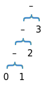
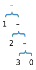

Reading 25: Map, Filter, Reduce
Software in 6.005
| Safe from bugs | Easy to understand | Ready for change |
|---|---|---|
| Correct today and correct in the unknown future. | Communicating clearly with future programmers, including future you. | Designed to accommodate change without rewriting. |
Objectives
In this reading you’ll learn a design pattern for implementing functions that operate on sequences of elements, and you’ll see how treating functions themselves as first-class values that we can pass around and manipulate in our programs is an especially powerful idea.
- Map/filter/reduce
- Lambda expressions
- Functional objects
- Higher-order functions
Introduction: an example
Suppose we’re given the following problem: write a method that finds the words in the Java files in your project.
Following good practice, we break it down into several simpler steps and write a method for each one:
- find all the files in the project, by scanning recursively from the project’s root folder
-
restrict them to files with a particular suffix, in this case
.java - open each file and read it in line-by-line
- break each line into words
Writing the individual methods for these substeps, we’ll find ourselves writing a lot of low-level iteration code. For example, here’s what the recursive traversal of the project folder might look like:
/**
* Find all the files in the filesystem subtree rooted at folder.
* @param folder root of subtree, requires folder.isDirectory() == true
* @return list of all ordinary files (not folders) that have folder as
* their ancestor
*/
public static List<File> allFilesIn(File folder) {
List<File> files = new ArrayList<>();
for (File f : folder.listFiles()) {
if (f.isDirectory()) {
files.addAll(allFilesIn(f));
} else if (f.isFile()) {
files.add(f);
}
}
return files;
}
And here’s what the filtering method might look like, which restricts that file list down to just the Java files (imagine calling this like
onlyFilesWithSuffix(files, ".java")
):
/**
* Filter a list of files to those that end with suffix.
* @param files list of files (all non-null)
* @param suffix string to test
* @return a new list consisting of only those files whose names end with
* suffix
*/
public static List<File> onlyFilesWithSuffix(List<File> files, String suffix) {
List<File> result = new ArrayList<>();
for (File f : files) {
if (f.getName().endsWith(suffix)) {
result.add(f);
}
}
return result;
}→ full Java code for the example
In this reading we discuss
map/filter/reduce
, a design pattern that substantially simplifies the implementation of functions that operate over sequences of elements.
In this example, we’ll have lots of sequences — lists of files; input streams that are sequences of lines; lines that are sequences of words; frequency tables that are sequences of (word, count) pairs.
Map/filter/reduce will enable us to operate on those sequences with no explicit control flow — not a single
for
loop or
if
statement.
Along the way, we’ll also see an important Big Idea: functions as “first-class” data values, meaning that they can be stored in variables, passed as arguments to functions, and created dynamically like other values.
Using first-class functions in Java is more verbose, uses some unfamiliar syntax, and the interaction with static typing adds some complexity. So to get started with map/filter/reduce, we’ll switch back to Python.
Abstracting out control flow
We’ve already seen one design pattern that abstracts away from the details of iterating over a data structure: Iterator.
Iterator abstraction
Iterator gives you a sequence of elements from a data structure, without you having to worry about whether the data structure is a set or a token stream or a list or an array — the
Iterator
looks the same no matter what the data structure is.
For example, given a
List<File> files
, we can iterate using indices:
for (int ii = 0; ii < files.size(); ii++) {
File f = files.get(ii);
// ...
But this code depends on the
size
and
get
methods of
List
, which might be different in another data structure.
Using an iterator abstracts away the details:
Iterator<File> iter = files.iterator();
while (iter.hasNext()) {
File f = iter.next();
// ...
Now the loop will be identical for any type that provides an
Iterator
.
There is, in fact, an interface for such types:
Iterable
.
Any
Iterable
can be used with Java’s
enhanced for statement
—
for (File f : files)
— and under the hood, it uses an iterator.
Map/filter/reduce abstraction
The map/filter/reduce patterns in this reading do something similar to Iterator, but at an even higher level: they treat the entire sequence of elements as a unit, so that the programmer doesn’t have to name and work with the elements individually.
In this paradigm, the control statements disappear: specifically, the
for
statements, the
if
statements, and the
return
statements in the code from our introductory example will be gone.
We’ll also be able to get rid of most of the temporary names (i.e., the local variables
files
,
f
, and
result
).
Sequences
Let’s imagine an abstract datatype
Seq<E>
that represents a
sequence
of elements of type
E
.
For example,
[1, 2, 3, 4]
∈
Seq<Integer>
.
Any datatype that has an iterator can qualify as a sequence: array, list, set, etc. A string is also a sequence (of characters), although Java’s strings don’t offer an iterator. Python is more consistent in this respect: not only are lists iterable, but so are strings, tuples (which are immutable lists), and even input streams (which produce a sequence of lines). We’ll see these examples in Python first, since the syntax is very readable and familiar to you, and then we’ll see how it works in Java.
We’ll have three operations for sequences: map, filter, and reduce. Let’s look at each one in turn, and then look at how they work together.
Map
Map applies a unary function to each element in the sequence and returns a new sequence containing the results, in the same order:
map : (E → F) × Seq<E> → Seq<F>
For example, in Python:
>>> from math import sqrt
>>> map(sqrt, [1, 4, 9, 16])
[1.0, 2.0, 3.0, 4.0]
>>> map(str.lower, ['A', 'b', 'C'])
['a', 'b', 'c']
map
is built-in, but it is also straightforward to implement in Python:
def map(f, seq):
result = []
for elt in seq:
result.append(f(elt))
return resultThis operation captures a common pattern for operating over sequences: doing the same thing to each element of the sequence.
Functions as values
Let’s pause here for a second, because we’re doing something unusual with functions. The
map
function takes a reference to a
function
as its first argument — not to the result of that function.
When we wrote
map(sqrt, [1, 4, 9, 16])
we didn’t
call
sqrt
(like
sqrt(25)
is a call), instead we just used its name.
In Python, the name of a function is a reference to an object representing that function.
You can assign that object to another variable if you like, and it still behaves like
sqrt
:
>>> mySquareRoot = sqrt
>>> mySquareRoot(25)
5.0
You can also pass a reference to the function object as a parameter to another function, and that’s what we’re doing here with
map
.
You can use function objects the same way you would use any other data value in Python (like numbers or strings or objects).
Functions are first-class in Python, meaning that they can be assigned to variables, passed as parameters, used as return values, and stored in data structures. First-class functions are a very powerful programming idea. The first practical programming language that used them was Lisp, invented by John McCarthy at MIT. But the idea of programming with functions as first-class values actually predates computers, tracing back to Alonzo Church’s lambda calculus. The lambda calculus used the Greek letter λ to define new functions; this term stuck, and you’ll see it as a keyword not only in Lisp and its descendants, but also in Python.
We’ve seen how to use built-in library functions as first-class values; how do we make our own? One way is using a familiar function definition, which gives the function a name:
>>> def powerOfTwo(k):
... return 2**k
...
>>> powerOfTwo(5)
32
>>> map(powerOfTwo, [1, 2, 3, 4])
[2, 4, 8, 16]When you only need the function in one place, however — which often comes up in programming with functions — it’s more convenient to use a lambda expression :
lambda k: 2**k
This expression represents a function of one argument (called
k
) that returns the value 2
k
.
You can use it anywhere you would have used
powerOfTwo
:
>>> (lambda k: 2**k)(5)
32
>>> map(lambda k: 2**k, [1, 2, 3, 4])
[2, 4, 8, 16]
Python lambda expressions are unfortunately syntactically limited, to functions that can be written with just a
return
statement and nothing else (no
if
statements, no
for
loops, no local variables).
But remember that’s our goal with map/filter/reduce anyway, so it won’t be a serious obstacle.
Guido Von Rossum, the creator of Python, wrote a blog post about the design principle that led not only to first-class functions in Python, but first-class methods as well: First-class Everything .
More ways to use map
Map is useful even if you don’t care about the return value of the function. When you have a sequence of mutable objects, for example, you can map a mutator operation over them:
map(IOBase.close, streams) # closes each stream on the list
map(Thread.join, threads) # waits for each thread to finish
Some versions of map (including Python’s built-in
map
) also support mapping functions with multiple arguments.
For example, you can add two lists of numbers element-wise:
>>> import operator
>>> map(operator.add, [1, 2, 3], [4, 5, 6])
[5, 7, 9]Filter
Our next important sequence operation is filter , which tests each element with a unary predicate. Elements that satisfy the predicate are kept; those that don’t are removed. A new list is returned; filter doesn’t modify its input list.
filter : (E → boolean) × Seq<E> → Seq<E>
Python examples:
>>> filter(str.isalpha, ['x', 'y', '2', '3', 'a'])
['x', 'y', 'a']>>> def isOdd(x): return x % 2 == 1
...
>>> filter(isOdd, [1, 2, 3, 4])
[1, 3]>>> filter(lambda s: len(s)>0, ['abc', '', 'd'])
['abc', 'd']We can define filter in a straightforward way:
def filter(f, seq):
result = []
for elt in seq:
if f(elt):
result.append(elt)
return resultReduce
Our final operator, reduce , combines the elements of the sequence together, using a binary function. In addition to the function and the list, it also takes an initial value that initializes the reduction, and that ends up being the return value if the list is empty.
reduce : (F × E → F) × Seq<E> × F → F
reduce(f, list, init)
combines the elements of the list from left to right, as follows:
result 0 = init
result 1 = f(result 0 , list[0])
result 2 = f(result 1 , list[1])
...
result n = f(result n-1 , list[n-1])
result n is the final result for an n-element list.
Adding numbers is probably the most straightforward example:
>>> reduce(lambda x,y: x+y, [1, 2, 3], 0)
6
# --or--
>>> import operator
>>> reduce(operator.add, [1, 2, 3], 0)
6There are two design choices in the reduce operation. First is whether to require an initial value. In Python’s reduce function, the initial value is optional, and if you omit it, reduce uses the first element of the list as its initial value. So you get behavior like this instead:
result 0 = undefined (reduce throws an exception if the list is empty)
result 1 = list[0]
result 2 = f(result 1 , list[1])
...
result n = f(result n-1 , list[n-1])
This makes it easier to use reducers like
max
, which have no well-defined initial value:
>>> reduce(max, [5, 8, 3, 1])
8
The second design choice is the order in which the elements are accumulated.
For associative operators like
add
and
max
it makes no difference, but for other operators it can.
Python’s reduce is also called
fold-left
in other programming languages, because it combines the sequence starting from the left (the first element).
Fold-right
goes in the other direction:
fold-right : (E × F → F) × Seq<E> × F → F
where
fold-right(f, list, init)
of an n-element list follows this pattern:
result 0 = init
result 1 = f(list[n-1], result 0 )
result 2 = f(list[n-2], result 1 )
...
result n = f(list[0], result n-1 )
to produce result n as the final result.
Here’s a diagram of two ways to reduce: from the left or from the right:
|  |
fold-left : (F × E → F) × Seq<E> × F → F
fold-left(-, [1, 2, 3], 0) = -6 |
 |
|
fold-right : (E × F → F) × Seq<E> × F → F
fold-right(-, [1, 2, 3], 0) = 2 |
The return type of the reduce operation doesn’t have to match the type of the list elements. For example, we can use reduce to glue together a sequence into a string:
>>> reduce(lambda s,x: s+str(x), [1, 2, 3, 4], '')
'1234'Or to flatten out nested sublists into a single list:
>>> reduce(operator.concat, [[1, 2], [3, 4], [], [5]], [])
[1, 2, 3, 4, 5]This is a useful enough sequence operation that we’ll define it as flatten , although it’s just a reduce step inside:
def flatten(list):
return reduce(operator.concat, list, [])More examples
Suppose we have a polynomial represented as a list of coefficients, a[0], a[1], ..., a[n-1], where a[i] is the coefficient of x i . Then we can evaluate it using map and reduce:
def evaluate(a, x):
xi = map(lambda i: x**i, range(0, len(a))) # [x^0, x^1, x^2, ..., x^(n-1)]
axi = map(operator.mul, a, xi) # [a[0]*x^0, a[1]*x^1, ..., a[n-1]*x^(n-1)]
return reduce(operator.add, axi, 0) # sum of axi
This code uses the convenient Python generator method
range(a,b)
, which generates a list of integers from a to b-1.
In map/filter/reduce programming, this kind of method replaces a
for
loop that indexes from a to b.
Now let’s look at a typical database query example.
Suppose we have a database about digital cameras, in which each object is of type
Camera
with observer methods for its properties (
brand()
,
pixels()
,
cost()
, etc.).
The whole database is in a list called
cameras
.
Then we can describe queries on this database using map/filter/reduce:
# What's the highest resolution Nikon sells?
reduce(max, map(Camera.pixels, filter(lambda c: c.brand() == "Nikon", cameras)))Relational databases use the map/filter/reduce paradigm (where it’s called project/select/aggregate). SQL (Structured Query Language) is the de facto standard language for querying relational databases. A typical SQL query looks like this:
select max(pixels) from cameras where brand = "Nikon"
camerasis a sequence (a list of rows, where each row has the data for one camera)
where brand = "Nikon"is a filter
pixelsis a map (extracting just the pixels field from the row)
maxis a reduce
Back to the intro example
Going back to the example we started with, where we want to find all the words in the Java files in our project, let’s try creating a useful abstraction for filtering files by suffix:
def fileEndsWith(suffix):
return lambda file: file.getName().endsWith(suffix)
fileEndsWith
returns
functions
that are useful as filters: it takes a filename suffix like
.java
and dynamically generates a function that we can use with filter to test for that suffix:
filter(fileEndsWith(".java"), files)
fileEndsWith
is a different kind of beast than our usual functions.
It’s a
higher-order function
, meaning that it’s a function that takes another function as an argument, or returns another function as its result.
Higher-order functions are operations on the datatype of functions; in this case,
fileEndsWith
is a
producer
of functions.
Now let’s use map, filter, and flatten (which we defined above using reduce) to recursively traverse the folder tree:
def allFilesIn(folder):
children = folder.listFiles()
subfolders = filter(File.isDirectory, children)
descendants = flatten(map(allFilesIn, subfolders))
return descendants + filter(File.isFile, children)The first line gets all the children of the folder, which might look like this:
["src/client", "src/server", "src/Main.java", ...]
The second line is the key bit: it filters the children for just the subfolders, and then recursively maps
allFilesIn
against this list of subfolders!
The result might look like this:
[["src/client/MyClient.java", ...], ["src/server/MyServer.java", ...], ...]
So we have to flatten it to remove the nested structure. Then we add the immediate children that are plain files (not folders), and that’s our result.
We can also do the other pieces of the problem with map/filter/reduce. Once we have the list of files we want to extract words from, we’re ready to load their contents. We can use map to get their pathnames as strings, open them, and then read in each file as a list of files:
pathnames = map(File.getPath, files)
streams = map(open, pathnames)
lines = map(list, streams)This actually looks like a single map operation where we want to apply three functions to the elements, so let’s pause to create another useful higher-order function: composing functions together.
def compose(f, g):
"""Requires that f and g are functions, f:A->B and g:B->C.
Returns a function A->C by composing f with g."""
return lambda x: g(f(x))Now we can use a single map:
lines = map(compose(compose(File.getPath, open), list), files)Better, since we already have three functions to apply, let’s design a way to compose an arbitrary chain of functions:
def chain(funcs):
"""Requires funcs is a list of functions [A->B, B->C, ..., Y->Z].
Returns a fn A->Z that is the left-to-right composition of funcs."""
return reduce(compose, funcs)So that the map operation becomes:
lines = map(chain([File.getPath, open, list]), files)Now we see more of the power of first-class functions. We can put functions into data structures and use operations on those data structures, like map, reduce, and filter, on the functions themselves!
Since this map will produce a list of lists of lines (one list of lines for each file), let’s flatten it to get a single line list, ignoring file boundaries:
allLines = flatten(map(chain([File.getPath, open, list]), files))Then we split each line into words similarly:
words = flatten(map(str.split, lines))And we’re done, we have our list of all words in the project’s Java files! As promised, the control statements have disappeared.
Benefits of abstracting out control
Map/filter/reduce can often make code shorter and simpler, and allow the programmer to focus on the heart of the computation rather than on the details of loops, branches, and control flow.
By arranging our program in terms of map, filter, and reduce, and in particular using immutable datatypes and pure functions (functions that do not mutate data) as much as possible, we’ve created more opportunities for safe concurrency. Maps and filters using pure functions over immutable datatypes are instantly parallelizable — invocations of the function on different elements of the sequence can be run in different threads, on different processors, even on different machines, and the result will still be the same. MapReduce is a pattern for parallelizing large computations in this way.
First-class functions in Java
We’ve seen what first-class functions look like in Python; how does this all work in Java?
In Java, the only first-class values are primitive values (ints, booleans, characters, etc.) and object references. But objects can carry functions with them, in the form of methods. So it turns out that the way to implement a first-class function, in an object-oriented programming language like Java that doesn’t support first-class functions directly, is to use an object with a method representing the function.
We’ve actually seen this before several times already:
-
The
Runnableobject that you pass to aThreadconstructor is a first-class function,void run(). -
The
Comparator<T>object that you pass to a sorted collection (e.g.SortedSet) is a first-class function,int compare(T o1, T o2). -
The
KeyListenerobject that you register with the graphical user interface toolkit to get keyboard events is a bundle of several functions,keyPressed(KeyEvent),keyReleased(KeyEvent), etc.
This design pattern is called a functional object or functor , an object whose purpose is to represent a function.
Lambda expressions in Java
Java’s lambda expression syntax provides a succinct way to create instances of functional objects. For example, instead of writing:
new Thread(new Runnable() {
public void run() {
System.out.println("Hello!");
}
}).start();we can use a lambda expression:
new Thread(() -> {
System.out.println("Hello");
}).start();On the Java Tutorials page for Lambda Expressions, read Syntax of Lambda Expressions .
There’s no magic here: Java still doesn’t have first-class functions. So you can only use a lambda when the Java compiler can verify two things:
-
It must be able to determine the type of the functional object the lambda will create.
In this example, the compiler sees that the
Threadconstructor takes aRunnable, so it will infer that the type must beRunnable. -
This inferred type must be
functional interface
: an interface with only one (abstract) method.
In this example,
Runnableindeed only has a single method —void run()— so the compiler knows the code in the body of the lambda belongs in the body of arunmethod of a newRunnableobject.
Java provides some standard functional interfaces we can use to write code in the map/filter/reduce pattern, e.g.:
-
Function<T,R>represents unary functions fromTtoR -
BiFunction<T,U,R>represents binary functions fromT×UtoR -
Predicate<T>represents functions fromTto boolean
So we could implement map in Java like so:
/**
* Apply a function to every element of a list.
* @param f function to apply
* @param list list to iterate over
* @return [f(list[0]), f(list[1]), ..., f(list[n-1])]
*/
public static <T,R> List<R> map(Function<T,R> f, List<T> list) {
List<R> result = new ArrayList<>();
for (T t : list) {
result.add(f.apply(t));
}
return result;
}And here’s an example of using map; first we’ll write it using the familiar syntax:
// anonymous classes like this one are effectively lambda expressions
Function<String,String> toLowerCase = new Function<>() {
public String apply(String s) { return s.toLowerCase(); }
};
map(toLowerCase, Arrays.asList(new String[] {"A", "b", "C"}));And with a lambda expression:
map(s -> s.toLowerCase(), Arrays.asList(new String[] {"A", "b", "C"}));
// --or--
map((s) -> s.toLowerCase(), Arrays.asList(new String[] {"A", "b", "C"}));
// --or--
map((s) -> { return s.toLowerCase(); }, Arrays.asList(new String[] {"A", "b", "C"}));
In this example, the lambda expression is just wrapping a call to
String
’s
toLowerCase
.
We can use a
method reference
to avoid writing the lambda, with the syntax
::
.
The signature of the method we refer to must match the signature required by the functional interface for static typing to be satisfied:
map(String::toLowerCase, Arrays.asList(new String[] {"A", "b", "C"}));In the Java Tutorials, you can read more about method references if you want the details.
Using a method reference (vs. calling it) in Java serves the same purpose as referring to a function by name (vs. calling it) in Python.
Map/filter/reduce in Java
The
abstract sequence type
we defined above exists in Java as
Stream
, which defines
map
,
filter
,
reduce
, and many other operations.
Collection types like
List
and
Set
provide a
stream()
operation that returns a
Stream
for the collection, and there’s an
Arrays.stream
function for creating a
Stream
from an array.
Here’s one implementation of
allFilesIn
in Java with map and filter:
public class Words {
static Stream<File> allFilesIn(File folder) {
File[] children = folder.listFiles();
Stream<File> descendants = Arrays.stream(children)
.filter(File::isDirectory)
.flatMap(Words::allFilesIn);
return Stream.concat(descendants,
Arrays.stream(children).filter(File::isFile));
}
The map-and-flatten pattern is so common that Java provides a
flatMap
operation to do just that, and we’ve used it instead of defining
flatten
.
Here’s
endsWith
:
static Predicate<File> endsWith(String suffix) {
return f -> f.getPath().endsWith(suffix);
}
Given a
Stream<File> files
, we can now write e.g.
files.filter(endsWith(".java"))
to obtain a new filtered stream.
Look at the revised Java code for this example .
You can compare all three versions : the familiar Java implementation, Python with map/filter/reduce, and Java with map/filter/reduce.
Higher-order functions in Java
Map/filter/reduce are of course higher-order functions; so is
endsWith
above.
Let’s look at two more that we saw before:
compose
and
chain
.
The
Function
interface provides
compose
— but the implementation is very straightforward.
In particular, once you get the types of the arguments and return values correct, Java’s static typing makes it pretty much impossible to get the method body wrong:
/**
* Compose two functions.
* @param f function A->B
* @param g function B->C
* @return new function A->C formed by composing f with g
*/
public static <A,B,C> Function<A,C> compose(Function<A,B> f,
Function<B,C> g) {
return t -> g.apply(f.apply(t));
// --or--
// return new Function<A,C>() {
// public C apply(A t) { return g.apply(f.apply(t)); }
// };
}
It turns out that we
can’t
write
chain
in strongly-typed Java, because
List
s (and other collections) must be homogeneous — we can specify a list whose elements are all of type
Function<A,B>
, but not one whose first element is a
Function<A,B>
, second is a
Function<B,C>
, and so on.
But here’s
chain
for functions of the same input/output type:
/**
* Compose a chain of functions.
* @param funcs list of functions A->A to compose
* @return function A->A made by composing list[0] ... list[n-1]
*/
public static <A> Function<A,A> chain(List<Function<A,A>> funcs) {
return funcs.stream().reduce(Function.identity(), Function::compose);
}
Our Python version didn’t use an initial value in the
reduce
, it required a non-empty list of functions.
In Java, we’ve provided the identity function (that is,
f(t) = t
) as the identity value for the reduction.
Summary
This reading is about modeling problems and implementing systems with immutable data and operations that implement pure functions , as opposed to mutable data and operations with side effects . Functional programming is the name for this style of programming.
Functional programming is much easier to do when you have first-class functions in your language and you can build higher-order functions that abstract away control flow code.
Some languages — Haskell , Scala , OCaml — are strongly associated with functional programming. Many other languages — JavaScript , Swift , several .NET languages , Ruby , and so on — use functional programming to a greater or lesser extent. With Java’s recently-added functional language features, if you continue programming in Java you should expect to see more functional programming there, too.